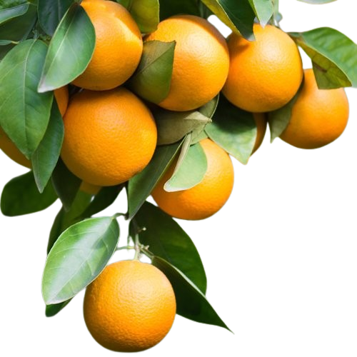
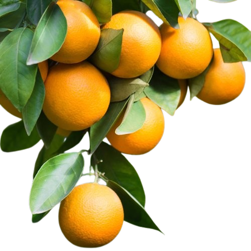

NARANJO
 

Descripción morfológica
El naranjo (Citrus sinensis) es un árbol perenne de tamaño mediano, conocido por su fruto comestible: la naranja. Presenta un tronco corto y copa redondeada y densa.
Sus hojas son simples, de forma ovalada, color verde brillante y con glándulas que exudan aceites aromáticos. Las flores son blancas, fragantes, y aparecen en grupos.
El fruto es una baya modificada, globosa, con cáscara anaranjada y pulpa jugosa segmentada, rica en vitamina C.
Distribución y hábitat
Originario del sudeste asiático, el naranjo se cultiva ampliamente en regiones tropicales y subtropicales del mundo.
Prefiere suelos bien drenados, ligeramente ácidos y climas cálidos con buena exposición solar. No tolera heladas severas.
Ciclo de vida y reproducción
Es una planta perenne que puede vivir y producir frutos por varias décadas. Se reproduce sexualmente por semillas y comúnmente por injertos para asegurar calidad del fruto.
Florece una vez al año y el fruto madura en varios meses dependiendo del clima.
Usos principales
🌿 Alimenticio: Su fruto se consume fresco, en jugos, postres y productos industriales. Es una fuente importante de vitamina C.
🌿 Medicinal: Las cáscaras y flores se usan en infusiones digestivas y relajantes. También contiene antioxidantes naturales.
🌿 Cosmético: El aceite esencial de naranja se emplea en perfumería y aromaterapia.
Ficha botánica
| Nombre común | Naranjo |
|---|---|
| Nombre científico | Citrus sinensis |
| Reino | Plantae |
| Filo | Magnoliophyta |
| Clase | Magnoliopsida |
| Orden | Sapindales |
| Familia | Rutaceae |
| Género | Citrus |
| Tipo de planta | Árbol perenne |
| Altura | Hasta 10 m |
| Reproducción | Sexual (semillas) y asexual (injertos) |
| Usos | Alimenticio, medicinal, cosmético |